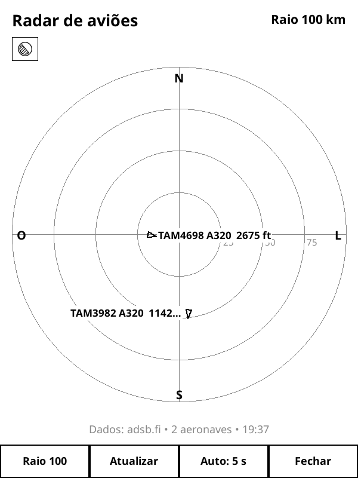

Um radar de aviões no Kindle
Postado em 01/09/2026
Seguindo a tendência do r/esp32, criei o Plane Radar, um plugin em Lua que transforma o Kindle com KOReader em um pequeno radar de aviões.

O plugin consulta os dados públicos do adsb.fi e mostra as aeronaves próximas em um radar monocromático. Quando as informações estão disponíveis, também aparecem o indicativo do voo, o modelo do avião, a altitude e a direção em que ele está seguindo.
O código e as instruções de instalação estão disponíveis no GitHub. Os dados do adsb.fi são destinados a uso pessoal e não comercial.